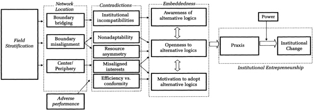

本文是针对论文《成熟领域的制度创业：五大会计师事务所(Institutional Entrepreneurship in Mature Fields: The Big Five Accounting Firms)》的一篇论文解析。
该论文颇有年头，总所周知，2002年安达信(Arthur Anderson)因安然事件被迫退出审计业务，故现在的改称为“四大会计师事务所”。
本文在2006年2月首次发表于《管理学院学报 (AMJ)》。作者为Royston Greenwood与Roy Suddaby，他们在加拿大阿尔伯塔大学(University of Alberta, UA)完成这次研究。目前，Royston Greenwood目前仍在UA，担任荣誉教授，他感兴趣的领域包括组织变革的动态、管理专业服务公司和新企业；而Roy Suddaby目前为利物浦大学管理学院的组织研究教授兼主席，加拿大维多利亚大学古斯塔夫森商学院的管理主席。
研究背景与问题
本研究讨论了当时兴起的，且在加拿大和美国的五大会计师事务所中实践的多学科实践（the multidisciplinary practice, MDP），即结合了多个专业的公司的组织形式，通常是会计与咨询，有时还包括法律，这种新形式是由精英会计师事务所率先倡导的。
本研究旨在解答以下问题：为什么且在什么情况下，已被组织制度规定的精英能够并且在高度制度化的背景下被激励成为制度创业者？
在成熟的环境中，很少记录精英行动者(elite actors)制度创业(Institutional Entrepreneurship)。先前的研究更多地关注由边缘或组织领域外部的行动者引起的制度创业。此外，本研究通过强调组织领域内的位置(location)与暴露于制度矛盾之间的关系，结合了以前不同的理论观点，对机构创业的动机进行了解释。由此，本研究解决了制度和组织理论中的一个共振主题，表明了行为者是如何被激励，并能够在受约束的制度下对待变化。
相关理论
制度创业与嵌入式代理悖论
要解释“制度创业”的内涵，就不能回避“制度(Institutional)”的概念。在组织和管理研究中，“制度”一词是基于强制性、规范性和认知性的规则或类规则等约束框架的总称。然而，总有一些组织内部的行为者会打破制度体系，成为制度创业者，在制度框架内部发起并推动制度变革，这个行为过程就被界定为“制度创业”(尤树洋, 杜运周, 张祎, 2015)。
不过，既然组织内部行为者的行为已被制度规定，他们又怎么能设想和实施对组织内部的变革呢？Seo和Creed(2002)将此称为“嵌入式代理悖论(the paradox of embedded agency)”。
新制度主义者从两种不同的文献中得出解决嵌入式代理悖论线索：
网络位置理论(Network location theory)：该理论将中央组织者和外围组织者分开。资源丰富的中央组织者，常会由于嵌入其机构环境中而“不识庐山真面目”。而外围组织者则更可能脱离制度，其原因有三：
- 他们与其他组织的联系较少，因此较少学习到组织的规范，这让他们对制度期望的了解较少；
- 另一个使他们对制度期望的了解较少的原因，是由于他们与实地流程之间的联系较弱；
- 他们通常会因现行安排而处于不利地位，而变革会让他们从中中受益。
辩证法理论(dialectical theory):Seo与Creed(2002)利用辩证法理论，指出了隐藏的“矛盾”在组织领域中的潜在作用。他们确定了四个矛盾：
- 效率矛盾(efficiency contradiction)：因遵循现有制度规定而产生的绩效水平，与市场中的替代机会所产生的绩效水平之间的差距；
- 非适应性矛盾(nonadaptability contradiction)：一个领域由于行为和思想处于“锁定”模式，无法适应外来的震动；
- 机构间不相容矛盾("interinstitutional incompatibility" contradiction)：价值观之间的矛盾，根深蒂固但相互矛盾；
- 利益冲突矛盾(misaligned interests contradiction)：现有逻辑的特权者和弱势者的利益分歧。 Seo和Creed认为，这些矛盾为实践制度创业奠定了基础，使组织行动者从从不加思索地参与机构再生产，到对现有安排的富有想象力的批评，再到为改变而采取的实际行动。
根据现有文献的观点，新思想出现在某个领域的边缘，因为在那里组织的嵌入度降低，特权降低，并且更容易遭受制度上的矛盾。相比之下，位于该领域中心的组织则更加了解情况，不断地社会化，具有更好的优势，因此更加包容和抵制变革。
然而，变化更有可能起源于领域外围的命题并不是绝对的。一些研究表明，中央组织有时确实充当机构企业家的角色。公司模仿的是榜样的其他公司，特别是那些与他们有系统关系的公司。因此，精英有可能会共同承担发起机构创业的责任。
组织形式
组织形式(Organizational forms)使人们能够以多种方式解决社会和经济问题，并反映特权和影响力的配置。制度创业可以看做是新的组织形式的一个特别有意义的例子。
新制度主义者将形式视为“信仰和价值观的体现”，因此组织形式是制度背景下，贯彻基本价值观的
组织结构和实践的原型配置。
研究过程，方法，实验和相关数据
本研究采用定性研究方式，以“自然主义探究”中使用的归纳逻辑来获得见解。主要在加拿大特许会计师协会（CICA）的管辖范围内收集大部分数据，但法律服务可以分析美国方面的回应来分析。
数据来源
访谈阶段采访了两类行动者：
- “五大”中的三家事务所（A，B和C）和在安永中的律师事务所的高级合伙人；以及法律和会计专业的高级管理人员。采访了三家事务所中分别采访了11名、12名和13名合伙人，以及律师事务所中的3名管理人员。所有受访者都参与了他们公司的战略决策，并且了解他们公司的多学科实践方法。大多数受访者已经在其公司工作了20多年。采用半结构化的访谈，重点是公司的结构和流程。
- 对加拿大多个省的注册会计师协会和律师协会的监管人员进行了23人/次采访。被访谈者均担任高级职务或对监视多学科实践负有具体责任。采用半结构化的访谈，重点关注“五大”会计师事务所与会计专业之间的关系，以及监管机构参与多学科实践的辩论。作为具体示例，研究人员询问了监管机构如何了解安永会计师事务所的知识。 所有访谈的时长在1.5小时之间，被记录并被转录（在允许的情况下）。采访样本涉及两名研究人员，以最大程度地减少采访者的偏见。研究参考1986年至1995年之间进行的45次访谈的文本，以获取背景信息以及对多学科实践的最初发展和阐述的具体见解。这些较早的采访是针对当时的“八大/六大”公司的合作伙伴的代表性样本。正是这个项目产生了传统的组织形式，和新兴的多学科实践形式。
此外，还查阅了五类档案信息。
- 回顾省的注册会计师协会和律师协会的年度报告（从2002年到1977年）
- 研究人员取得了访问尚未公开的省级背景文件的机会，确认了事件发生的时间顺序，提供了采访无法获得的细节，并提供了辩论和讨论的文字说明。
- 审查了“五大”事务所发布的文件和新闻稿，包括他们共同委托撰写的重要报告。
- 还查阅了阿尔伯塔省注册会计师协会（ICAA）提供的培训课程清单和促销视频的笔录。
- 查阅了美国证券交易委员会（SEC）进行的公开查询的笔录。
数据收集与分析
按照Miles和Huberman(1994)的方法，将数据整理成一个按时间顺序排列的简明帐户，并根据其来源对每个数据段进行编码。数据段保留原始措辞，对于每个细分，都指出了它与嵌入性（代码“ E”）还是性能（代码“ P”）有关。根据时间顺序，为每个主要参与的合伙人编排数据。使用以下“生成式”问题，试图捕捉参与多学科实践的不同行为者的解释：为什么“五大”事务所有动力进行变革？特殊的变化（多学科实践的想法）从何而来？监管机构的作用是什么？多学科实践辩论是如何构成问题的？
通过原始数据、摘要和理论之间的多次迭代，总结出了四个核心动力：
- 不良绩效(adverse performance)：对审计服务需求的放缓，这挑战了这些事务所维持最近增长率的能力，以及在遵守现有公约与寻找替代机会的选择之间提出了一种矛盾。
- 边界桥接(boundary bridging)：事务所与客户间有重要的独特联系，这些客户要求提供扩展服务，加剧了机构间的不兼容性。
- 边界错位(boundary misalignment)：事务所经营规模与监管机构管辖权之间的差异，这突出了监管边界的僵化。
- 资源不对称(resource asymmetry)：这是核心动力，事务所与监管机构之间的资源差异。
随着研究的进展，研究者试图通过使用补充数据源，尤其是非访谈数据来验证新的变革动力。在数据分析的最后阶段，研究者利用SEC的记录进一步检查了动态情况。这个阶段的研究目的是验证性的，而不是探索性的，这符合从归纳到演绎的“基本分析循环(basic analytic cycle)”。具体来说，是想看看上面分析的四个动力是否出现在一个非常公开，甚至有点敌意的讨论场合中。第二作者通读了笔录，并使用计算机辅助的文本分析软件(NUD*IST)，提取了所有为多学科实践提供正当理由的文章。从数据集中排除的是学者，消费者群体和其他人的证词，排除后留下135个文本段。然后，再根据先前确定的核心主题对这些段进行了编码。 分析发现了本研究动力理论的确凿证据
研究发现或结果
通过对这些专业机构的观察，作者现在提出一个成熟的组织领域中的精英制度创业行为的过程模型（如下图所示），并提供有关嵌入式代理悖论的见解。该模型核心是：专业领域结构的各个组件并非均等的，成熟领域的发展方向也不一定是稳定和平衡。相反，领域被分为专门的组织社区，每个社区都有各自不同的网络位置。从而导致领域级别不同暴露程度的矛盾，进而导致嵌入度的不同和不断提高。
换句话说，中心主题包括三个组成部分：
- 网络位置(network location)定义了特定行为者将要暴露的制度矛盾(contradictions)；
- 矛盾会影响行为者的内在嵌入程度(embeddedness)，从而在制度上决定行为的程度；
- 随着时间的流逝，该领域通过行为者的嵌入度而增加或减少而逐步发展。
在本文中，作者着重于中央精英组织的网络定位。

本研究根据中央精英组织的网络定位模型，提出以下命题：
- 精英组织占据着独特的网络位置，这使他们面临领域级别的矛盾。这些矛盾影响了这些组织的制度根植性，从而影响了它们进行制度创业的能力。
- 组织领域内的中央组织被嵌入普遍的制度逻辑中，并在普遍的制度逻辑中享有特权。因此，中央组织既不接受，也不愿意引入其他替代逻辑。
- 占据边界桥梁位置的中央组织面临制度上的矛盾，增加了对替代可能性的意识(awareness)。
- 占据边界错位的中央组织面临适应性和资源不对称性的矛盾，增加了对替代可能性的开放性(openness)。
- 绩效不佳在制度整合和职能效率之间产生了矛盾，增加了采用替代可能性的动机(motivation)。
- 中央组织的制度创业是嵌入的一种功能，它包括意识、开放性和动机之间的相互作用。
- 与外围组织的类似努力相比，中央组织的制度创业更有可能导致机构变革。
总结全文，不足和未来方向
总结全文
本文对制度理论的贡献是提供了动机的、内生的变化。以往较少对相关经验分析研究，尤其是阐述在成熟领域中变化的案例分析。此外，通过关注作为组织变革源头的中央组织，回应了最近对更好地理解代理机构如何符合制度确定论(institutional determinism)的呼吁。
本研究也是将两个先前分离的理论——网络位置理论和辩证法理论观点结合起来的早期尝试。这也是对领域级别的矛盾如何影响嵌入性，并促成变化经验的初步应用。最后，通过增加监管者之间的资源不对称性来扩展矛盾理论，并将其视为重要矛盾。
不足和未来方向
本研究中，会计行业可能并不是典型行业。不同于制造业或其他传统行业，会计行业的资本密集度较低。而对于更保守的专业领域，例如法律业，中央组织可能会与”五大“事务所贯彻落实制度的方式有所不同。因此，需要更多的研究中央组织在哪里会实行制度创业。
进一步而言，本研究的案例是机构变革的一次失败尝试。本研究遇上安然公司倒闭的特大事件，这使“五大”的多学科实践的开始被制止了。需要进一步的研究才能探究变革的全貌。
小编评语
这篇文章的有趣之处，在于对”五大“会计师事务所时代侧面记录。曾经辉煌的”安达信“事务所在安然事件揭露前后不到几个月就陷入破产。从百年老店变为教材中的案例，可见诚信在专业领域中的重要性。安达信的“失职”，让安然可以将数亿美元的债务隐藏在财务报表以外。这一行为不但欺骗了投资者，更对全球会计行业也引发巨大冲击。
本文提及了中央组织是变革的主力军，但是安达信在审计上的错漏正是中央管理层判断失误导致的。作为会计事务所，诚信应是公司的核心价值，而这个价值如果不能成为组织中得到中央行动者的共识，精心设计的组织制度也就无从施展。
参考文献：
- Greenwood, R., & Suddaby, R. (2006). Institutional entrepreneurship in mature fields: The big five accounting firms. Academy of Management journal, 49(1), 27-48.
- 尤树洋, 杜运周, & 张祎. (2015). 制度创业的概念述评, 量化分析与研究展望. 管理学报, 12(11), 1718.